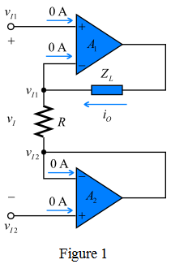
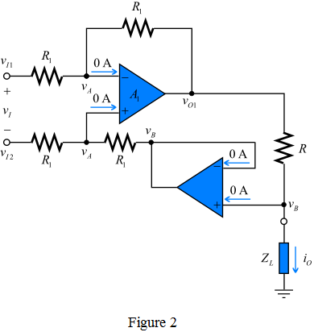

Consider the following from the circuit in Figure 1.

Apply Kirchhoff’s current law at the inverting terminal of first operational amplifier to get the output current.
Substitute for  .
.
…… (1)
Therefore, the output current,  is .
is .
(a)
Refer to circuit diagram in Figure P2.78 (a) in the textbook.
For an ideal op-map, the inverting and non-inverting terminal currents are zero and the inverting and non-inverting node voltages are equal.
Redraw the circuit in Figure P2.78 (a) to represent the currents and voltages.

Consider the following from the circuit in Figure 1.
Apply Kirchhoff’s current law at the inverting terminal of first operational amplifier to get the output current.
Substitute for .
…… (1)
Therefore, the output current, is .
(b)
Refer to circuit diagram in Figure P2.78 (b) in the textbook.
For an ideal op-map, the inverting and non-inverting terminal currents are zero and the inverting and non-inverting node voltages are equal.
Redraw the circuit in Figure P2.78 (b) to represent the currents and voltages.

Consider the following from the circuit in Figure 2.
Apply Kirchhoff’s current law at the inverting terminal of the first operational amplifier.
…… (2)
Substitute for in the equation.
Since,  ,
,
…… (3)
Apply Kirchhoff’s current law at the non-inverting terminal of the second operational amplifier:

Substitute  for in the equation.
for in the equation.
…… (4)
Therefore, the output current,  is .
is .
Observe the following from the expressions for the output currents of the circuits in Figure 1 and 2 that are from the equations (1) and (4).
The output current, of both the circuits does not depend on the load impedance but on the input voltage,  .
.
Thus, the circuits shown in Figure 1 and 2 are surely voltage-to-current converters.
The input is applied between the positive terminals of the operational amplifiers of the circuit in Figure 1 and negative terminals of the circuit in Figure 2.
Thus, the output current obtained for the circuit in Figure 1 is positive and for Figure 2 is negative.
Hence, the circuit in Figure 1 is a non-inverting amplifier, and the circuit in Figure 2 is an inverting amplifier.